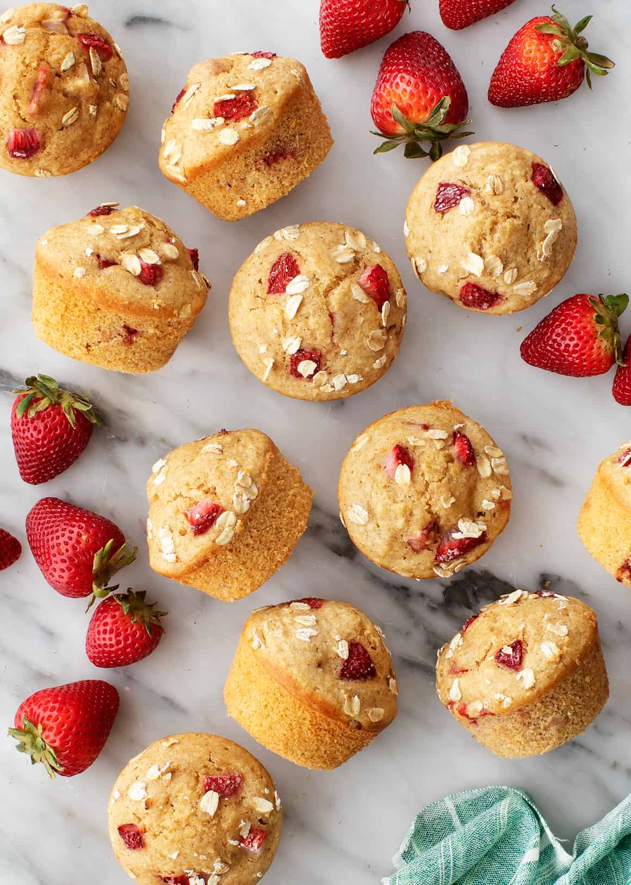

Strawberry-muffins

Description
Strawberry ice cream, strawberry cake, strawberry milkshake, why not strawberry muffin!?
A delicious strawberry small dome cake made from dough.
Ingredients
- 3/4 cup white sugar
- 1/2 cup better, softened
- 1 egg
- 2 cups all-purpose flour
- 2 teaspoons baking powder
- 1/2 teaspoon salt
- 1/2 cup milk
- 1/2 teaspoon vanilla extract
- 1 1/2 cups chopped strawberries
- 3 teaspoons white sugar
- 1/2 teaspoon ground cinnamon
Steps
- Preheat the oven to 400 degrees F (200 degrees C). Grease a 12-cup muffin tin or line with paper liners.
- Beat 3/4 cup sugar and butter together in a mixing bowl using an electric mixer until creamy. Add egg and mix well.
- Sift flour, baking powder, and salt together in a small bowl. Add flour mixture and milk alternately to butter mixture until combined. Stir in vanilla extract. Gently stir in strawberries.
- Spoon batter into the prepared muffin cups. Combine 3 teaspoons sugar and cinnamon in a small bowl and sprinkle over tops of muffins.
- Bake in the preheated oven until a toothpick inserted into the center of a muffin comes out clean, 20 to 25 minutes.
return to homepage